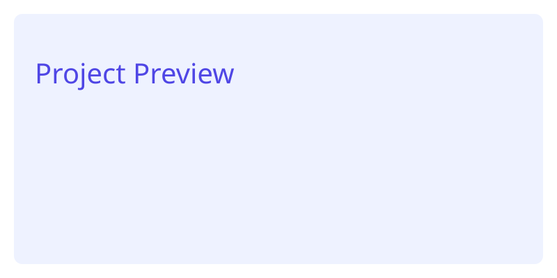
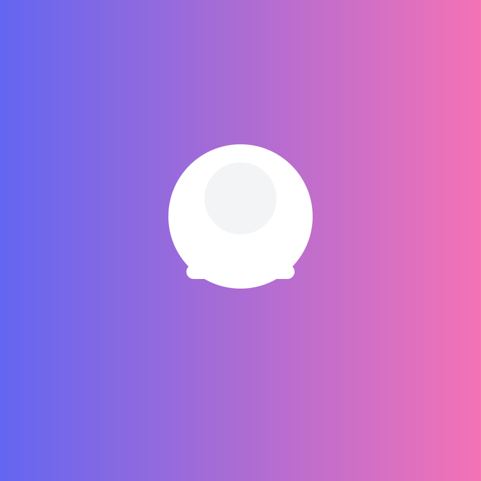
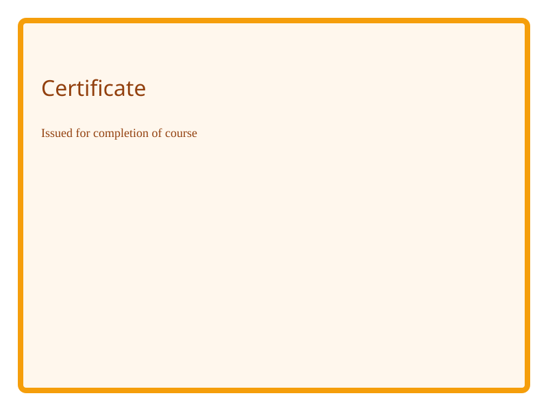

Project Title 1
Short description of the project. Tech stack, link, and details.
React
Tailwind
Vite
Frontend developer — I build beautiful, accessible web apps and admin dashboards.


Short description of the project. Tech stack, link, and details.

Short description of the project. Tech stack, link, and details.


This is a simplified but visually similar version of Portofolio V5. It uses static HTML and Tailwind Play CDN so you can open the file directly without installing dependencies.